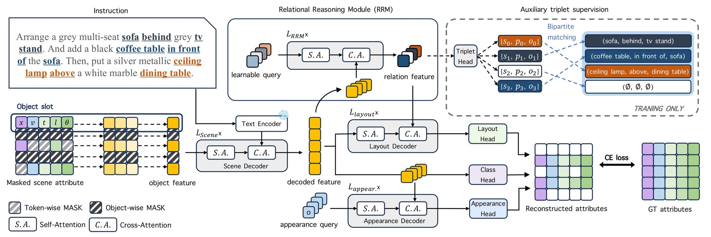
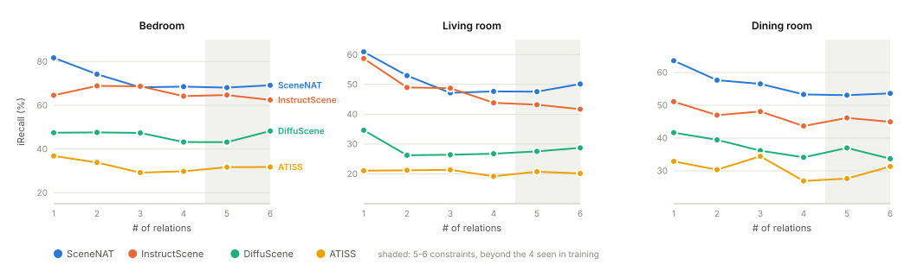
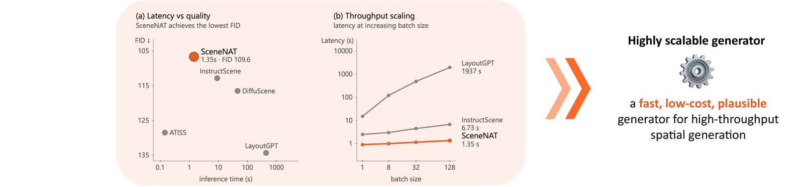
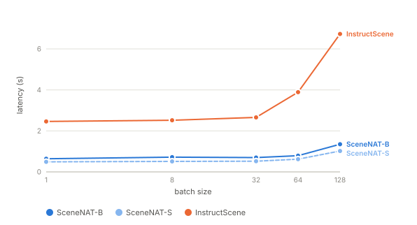
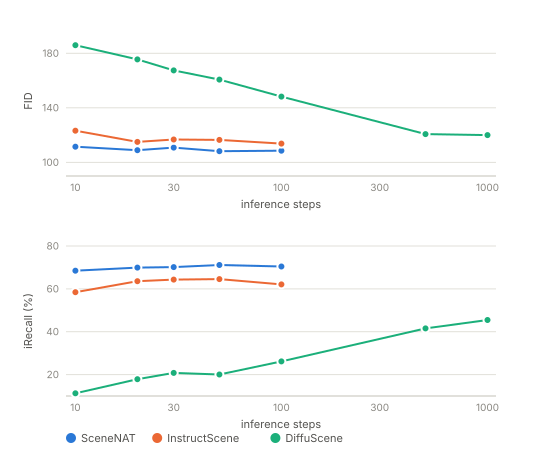
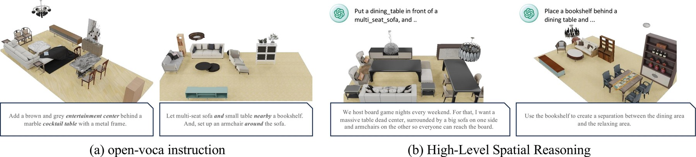
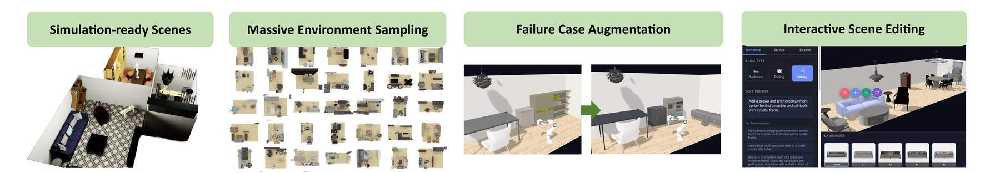

We present SceneNAT, a masked non-autoregressive Transformer for 3D indoor scene synthesis from natural language instructions. It generates complete scenes in a few parallel decoding passes, improving both quality and efficiency over prior methods. SceneNAT is trained via masked modeling over fully discretized representations of both semantic and spatial attributes. By applying a masking strategy at both the attribute level and the instance level, the model can better capture intra-object and inter-object structure.
To boost relational reasoning, SceneNAT employs a relational reasoning module (RRM) that captures implicit spatial constraints. By formulating relation modeling as a set prediction task, it extracts structure-aware features to guide the layout generation without explicit sequential parsing. Extensive experiments on 3D-FRONT show that SceneNAT outperforms state-of-the-art autoregressive and diffusion baselines in both semantic compliance and spatial arrangement accuracy, while using substantially less computation.
The same instruction, rendered by every method in the same frame. Switch methods to see what changes — the differences are in which objects appear and where they land.
Use ← → to change scene, 1–4 to change method.

A scene is a set of objects, each written as fully discrete tokens: a category x, four vector-quantized appearance tokens v, and discretized layout parameters — position t, scale l, and yaw θ. Training masks a fraction of those tokens under a cosine schedule and asks the model to fill them back in.
The masking budget is split stochastically between the object level and the token level, so the model has to handle both "this whole object is missing" and "this object's rotation is missing." Object-level masking is what drives instruction adherence; token-level masking mostly helps FID. A BERT-style replace-and-remask policy on top is what makes non-autoregressive training stable at all — dropping it takes FID from 109.55 to 191.69.
Instructions carry spatial relations, and stuffing them through the text encoder alone is not enough. RRM handles them separately: a transformer decoder turns a fixed set of learnable triplet queries into relation-aware features, supervised by the ground-truth (subject, predicate, object) triplets parsed from the instruction. Because the relations form a set with no natural order, the loss is a direct set prediction objective: a Hungarian bipartite matching between predicted and ground-truth triplets, with a no-relation class absorbing the unused queries.
At inference SceneNAT never decodes symbolic triplets. Only the learned relational features are injected into layout decoding — the symbolic heads exist purely as training supervision. Removing RRM drops iRecall from 70.45 to 62.77.
Generation starts from a fully masked scene matrix and refines it in parallel. Each row of the grid is an object, each column an attribute; coloured cells are tokens the model has committed to, dark cells are still masked. Under the remasking schedule, low-confidence cells go dark again and get another pass.
All tokens masked —
nothing decoded yet
Text-conditioned synthesis on 3D-FRONT. Mean over 10 independent trials for the generative-quality and instruction-adherence metrics. Lower is better everywhere except iRecall, NAV and ACC.
| Method | iRecall ↑ | FID ↓ | FID-CLIP ↓ | KID×103 ↓ | NAV ↑ | COL ↓ | ACC ↑ | Floor Pen. ↓ |
|---|---|---|---|---|---|---|---|---|
| LayoutGPT | 45.32 | 133.31 | 8.77 | 3.49 | 73.45 | 51.64 | 41.65 | 0.0274 |
| ATISS | 31.30 | 128.50 | 7.50 | 3.59 | 78.7 | 52.6 | 53.3 | 0.056 |
| DiffuScene | 45.98 | 119.37 | 6.71 | 1.04 | 83.6 | 34.8 | 54.5 | 0.014 |
| InstructScene | 66.72 | 115.76 | 6.50 | −0.33 | 79.9 | 29.3 | 53.0 | 0.016 |
| SceneNAT (Ours) | 70.45 | 109.55 | 6.19 | −1.18 | 84.9 | 23.9 | 58.0 | 0.019 |
| LayoutGPT | 40.65 | 142.34 | 9.94 | 22.93 | 83.78 | 44.18 | 61.98 | 0.0348 |
| ATISS | 20.46 | 134.71 | 8.46 | 52.26 | 96.3 | 54.9 | 78.7 | 0.029 |
| DiffuScene | 27.39 | 115.09 | 5.64 | 14.03 | 93.4 | 34.6 | 74.5 | 0.014 |
| InstructScene | 47.97 | 111.58 | 5.31 | 9.30 | 93.1 | 36.0 | 71.0 | 0.018 |
| SceneNAT (Ours) | 50.01 | 110.28 | 5.49 | 6.18 | 94.3 | 26.5 | 71.8 | 0.018 |
| LayoutGPT | 38.44 | 155.04 | 10.68 | 20.43 | 76.68 | 46.09 | 59.49 | 0.0301 |
| ATISS | 30.52 | 157.60 | 10.65 | 61.31 | 91.3 | 55.3 | 79.7 | 0.041 |
| DiffuScene | 36.68 | 132.97 | 7.93 | 16.61 | 87.9 | 30.5 | 73.8 | 0.011 |
| InstructScene | 46.54 | 132.91 | 7.64 | 14.81 | 86.4 | 34.4 | 68.9 | 0.019 |
| SceneNAT (Ours) | 56.29 | 129.65 | 7.51 | 12.26 | 87.2 | 23.8 | 71.9 | 0.017 |
Training used at most four relational constraints. The shaded band is five and six — complexity the model never saw. InstructScene sags there; SceneNAT stays flat.

FreeScene numbers are taken from its own paper. For comparability with that setting, SceneNAT's iRecall here is measured with at most two constraints.
| Room | Method | iRecall ↑ | FID ↓ | FID-CLIP ↓ | KID×103 ↓ |
|---|---|---|---|---|---|
| Bedroom | FreeScene | 73.69 | 111.21 | 6.43 | 0.35 |
| SceneNAT (Ours) | 77.96 | 109.55 | 6.19 | −1.18 | |
| Living room | FreeScene | 58.16 | 110.55 | 5.83 | 7.95 |
| SceneNAT (Ours) | 59.56 | 110.28 | 5.49 | 6.18 | |
| Dining room | FreeScene | 63.39 | 127.28 | 8.01 | 14.83 |
| SceneNAT (Ours) | 61.89 | 129.65 | 7.51 | 12.26 |
Parallel decoding is the whole point: SceneNAT reaches its quality in about 30 steps, where InstructScene needs 110 and DiffuScene 1000. Timings are at batch size 128 over 50 iterations after warmup.

| Model | Inference time (s) | Params (M) | TFLOPs | FID ↓ | iRecall ↑ |
|---|---|---|---|---|---|
| ATISS | 0.14 | 33.5 | 0.2 | 128.50 | 31.30 |
| DiffuScene | 33.28 | 63.4 | 63.5 | 119.37 | 45.98 |
| InstructScene | 6.73 | 87.7 | 44.3 | 115.76 | 66.72 |
| SceneNAT-S | 1.02 | 53.1 | 7.9 | 110.91 | 67.06 |
| SceneNAT-B | 1.35 | 69.9 | 10.3 | 109.55 | 70.45 |
The smaller variant is worth a second look: SceneNAT-S already beats InstructScene on both FID and iRecall while running 6.6× faster with 5.6× fewer TFLOPs.


Training instructions are templated, but real ones are not. Because conditioning runs through a frozen CLIP text encoder, unseen wording still lands somewhere sensible in the embedding space — and for genuinely abstract requests, a general-purpose LLM can rewrite the prompt into explicit relations without SceneNAT changing at all.

The LLM is not doing the layout. It is constrained to a fixed vocabulary of object types and spatial relations and asked to emit nothing but simple placement pairs, which SceneNAT then grounds.
System: You are an expert spatial reasoning assistant that converts implicit
natural language descriptions of indoor scenes into explicit spatial relational
constraints.
STRICT GUIDELINES:
1. You MUST ONLY use the following predefined categories. Do NOT invent any
other objects or relations.
- Object types: armchair, bookshelf, cabinet, ceiling lamp, chaise longue
sofa, chinese chair, coffee table, console table, corner side table, desk,
dining chair, dining table, l shaped sofa, lazy sofa, lounge chair,
loveseat sofa, multi seat sofa, pendant lamp, round end table, shelf,
stool, tv stand, wardrobe, wine cabinet
- Spatial relations: above, left of, in front of, closely left of, closely
in front of, below, right of, behind, closely right of, closely behind
2. Do NOT write explanatory text, conversational filler, or complex grammar.
The output MUST strictly be a sequence of simple pairs in the exact format
separated by commas or "and":
"Place a [Object A] [Relation] a [Object B]"
User: Use the bookshelf to create a separation between the dining area and
the relaxing area.
Assistant: Place a bookshelf behind a dining table and place a bookshelf in
front of a multi seat sofa.
@article{choi2026scenenat,
title={SceneNAT: Masked Generative Modeling for Language-Guided Indoor Scene Synthesis},
author={Choi, Jeongjun and Park, Yeonsoo and Kim, H Jin},
journal={arXiv preprint arXiv:2601.07218},
year={2026}
}